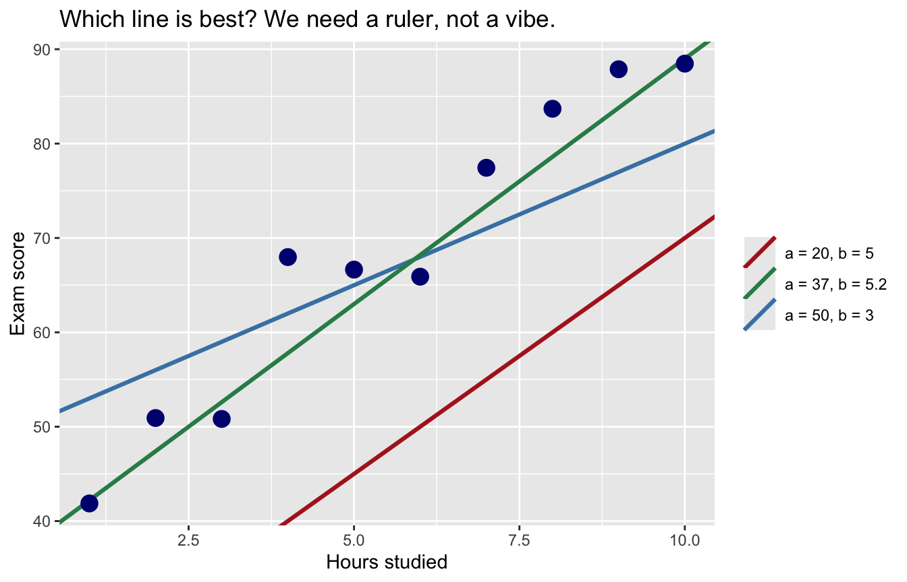
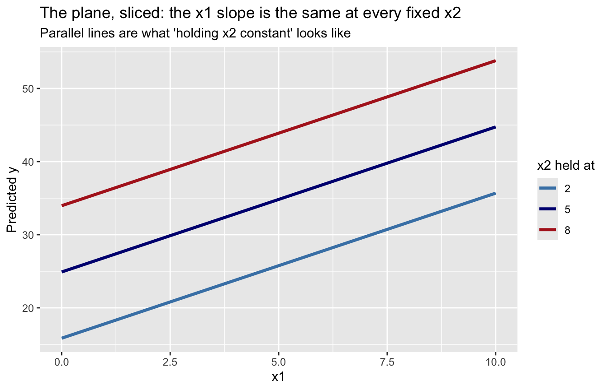
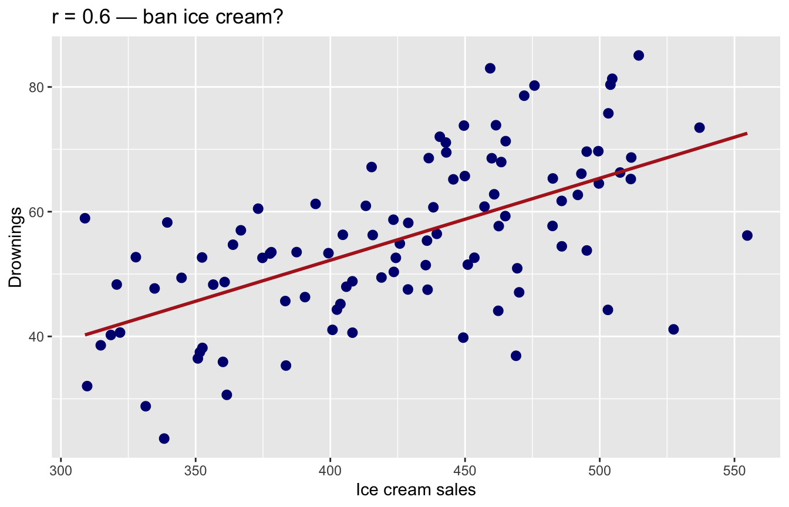
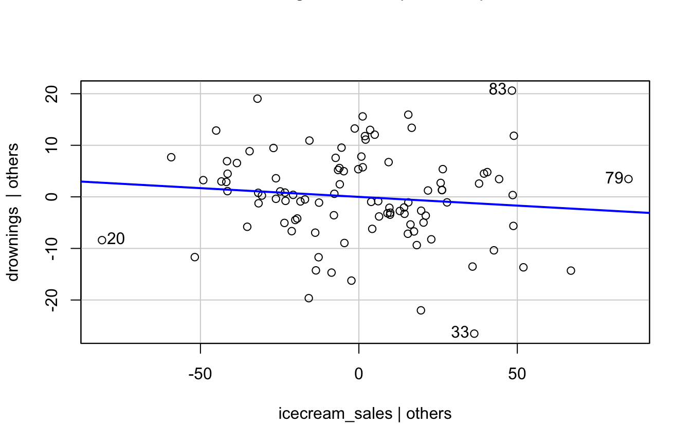
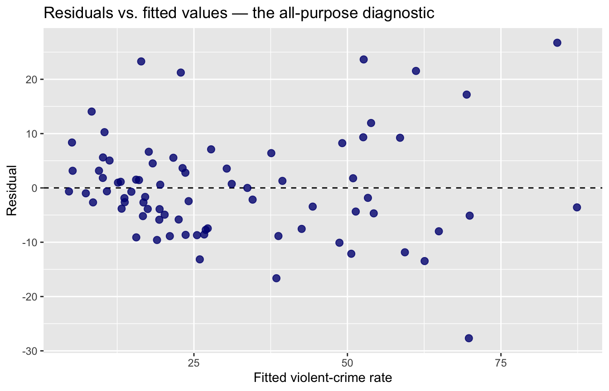
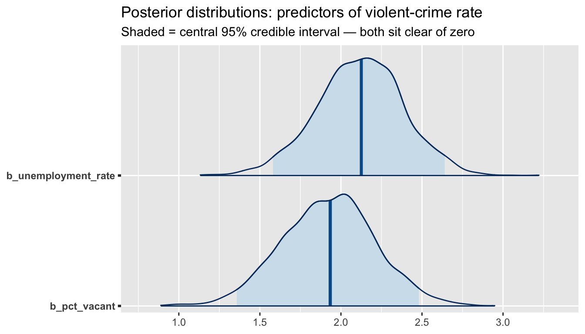

Demo Walkthrough · Session 11
Multiple linear regression — least squares, R², ‘holding constant,’ and the Bayesian version
What this page is. The Session 11 lecture demos, written down step by step. Run the setup chunk once, then work top to bottom — every demo reproduces exactly what happened on screen. Use this page to catch up after a missed class, or to re-run the lecture at your own pace.
What you’ll build
- A hand-rolled ruler for “best line” —
SSR()— tested on three candidate lines, the proof thatlm()beats every hand-picked guess, and the check that one-predictor R² is just Session 10’s correlation, squared - The best-fitting plane for two predictors (static slices here — the slides have the spinnable 3D version)
- The ice-cream/drownings lurker: a “significant” coefficient that evaporates when the third variable enters
- A real two-predictor model of violent crime across Chicago’s 77 community areas — read honestly, then diagnosed (residual plot, VIF)
- The same model in
brms: posterior distributions, and the reporting sentence each tradition licenses
Setup
Two non-tidyverse packages today: car (for VIF — install.packages("car") if you don’t have it) and brms from ANOVA week (bayesplot came along free when you installed it). The usual brms reminder: the first brm() of a session pauses at Compiling Stan program... for a minute before sampling starts. It is not frozen. Compiling.
1 · Least squares: build the ruler by hand
Ten students, hours studied and exam scores. Some line through this cloud is the “best” one — but best by what ruler? Start with three candidates. (Seed 1 is kept from the lecture so every number matches the slides.)
set.seed(1)
students <- tibble(
hours = 1:10,
score = 40 + 5 * hours + rnorm(10, 0, 5)
)
candidates <- tibble(
a = c(20, 50, 37),
b = c(5, 3, 5.2),
line = c("a = 20, b = 5", "a = 50, b = 3", "a = 37, b = 5.2")
)
ggplot(students, aes(hours, score)) +
geom_abline(data = candidates, aes(intercept = a, slope = b, color = line),
linewidth = 1.1) +
geom_point(size = 4, color = "navy") +
scale_color_manual(values = c("firebrick", "seagreen", "steelblue")) +
labs(x = "Hours studied", y = "Exam score", color = NULL,
title = "Which line is best? We need a ruler, not a vibe.")
The ruler: for any candidate line, measure every vertical miss, square it (so misses above and below don’t cancel), and add them up. That total is the sum of squared residuals:
SSR <- function(a, b) {
predicted <- a + b * students$hours
sum((students$score - predicted)^2)
}
SSR(20, 5) # too low[1] 4405.871SSR(50, 3) # too flat[1] 584.9933SSR(37, 5.2) # roughly right[1] 196.9529Smaller total = better line. Least squares = find the line with the smallest total of all. No trial and error required — lm() solves for it directly:
(Intercept) hours
39.15588 5.27366 [1] 130.9173Our best hand-picked guess left about 197 in squared misses; lm() gets it down to about 131 — and no other line does better. Read the slope: each additional hour of studying predicts about 5.3 more points, in this sample. The vertical gap between each point and the winning line is that student’s residual — the miss the model owns. (The slides animate the search: the line tilts until the SSR stops shrinking.) So how much did the winning line explain? That’s R²:
R² is the proportion of the outcome’s variance the model accounts for — here about 95% (it’s simulated data; real life humbles us below). And notice the second line: with one predictor, R² is just Session 10’s correlation, squared. With multiple predictors, R² keeps the same meaning — variance explained by the whole team — but no single correlation owns it anymore.
2 · Two predictors: from line to plane
With one predictor the model is a line through a 2-D cloud. With two, it’s a plane floating in a 3-D cloud — one slope along each predictor’s axis, chosen by the same ruler: minimize the total squared vertical distance from every point to the surface. Simulate data where we know the truth — intercept 10, slopes 2 and 3 — and check that lm() finds it:
(Intercept) x1 x2
9.80 1.98 3.02 Close to (10, 2, 3) — least squares recovered the plane. A flat page can’t spin a 3-D plot, but slicing the plane says the same thing: hold x2 fixed at a few values and plot predicted y against x1:
slices <- expand_grid(x1 = seq(0, 10, length.out = 50), x2 = c(2, 5, 8))
slices$predicted <- predict(plane_fit, newdata = slices)
ggplot(slices, aes(x1, predicted, color = factor(x2))) +
geom_line(linewidth = 1.2) +
scale_color_manual(values = c("steelblue", "navy", "firebrick")) +
labs(title = "The plane, sliced: the x1 slope is the same at every fixed x2",
subtitle = "Parallel lines are what 'holding x2 constant' looks like",
x = "x1", y = "Predicted y", color = "x2 held at")
Every slice climbs at slope ≈ 2 (the x1 coefficient); jumping between slices is the x2 coefficient’s job. For the grab-and-spin 3-D version — points, plane, and residuals — open the Session 11 slides (“The Best-Fitting Plane, Live”).
3 · The lurking third variable
Ice cream sales and drowning deaths are strongly correlated. Every summer. Reliably. Build the world where temperature secretly drives both:
set.seed(705)
lurk <- tibble(
temperature = runif(100, 60, 100),
icecream_sales = 20 + 5 * temperature + rnorm(100, 0, 30),
drownings = -10 + 0.8 * temperature + rnorm(100, 0, 10)
)
ggplot(lurk, aes(icecream_sales, drownings)) +
geom_point(color = "navy", size = 2.5) +
geom_smooth(method = "lm", se = FALSE, color = "firebrick") +
labs(title = "r = 0.6 — ban ice cream?",
x = "Ice cream sales", y = "Drownings")
Model 1 fits what the scatterplot suggests — ice cream “predicts” drownings:
Estimate Std. Error t value Pr(>|t|)
(Intercept) -0.3876 7.5245 -0.0515 0.959
icecream_sales 0.1315 0.0175 7.5165 0.000The coefficient is positive and the p-value has ten zeros in it. Statistically significant; the model says it’s real. Do we believe it? No — but notice that nothing in this output warns us. The model can only see the variables we gave it. So give it the lurker:
Estimate Std. Error t value Pr(>|t|)
(Intercept) -10.0979 6.5333 -1.5456 0.1255
icecream_sales -0.0339 0.0299 -1.1352 0.2591
temperature 0.9884 0.1553 6.3634 0.0000Holding temperature constant, ice cream’s coefficient collapses from 0.13 to about −0.03 and goes nonsignificant (p ≈ 0.26), while R² jumps from 0.37 to 0.55. Temperature was driving both variables the whole time. This is holding constant doing real work: comparing days with the same temperature, ice cream tells you nothing about drownings. An added-variable plot (from car) shows exactly that — the ice cream–drownings relationship after temperature’s contribution is removed from both:
avPlots(lurk_m2, terms = ~ icecream_sales,
main = "Ice cream vs. drownings, with temperature partialed out")
Flat. That flat line is the multiple-regression coefficient for ice cream. The moral: multiple regression holds constant only the variables you measured and included. Every observational model has potential lurkers you didn’t measure — so coefficients are adjusted associations, not causal effects. Keep that loaded; the Chicago models below will tempt you to talk causally.
4 · Real data: violence across Chicago’s 77 areas
You plotted violent-crime rate against unemployment across the 77 community areas in Session 10 — a strong upward cloud, each dot an area, not a person (say it with me: ecological). Look at that scatter again first if it isn’t fresh, then fit one predictor:
Call:
lm(formula = violent_rate ~ unemployment_rate, data = areas)
Residuals:
Min 1Q Median 3Q Max
-32.137 -6.340 -2.670 5.843 43.339
Coefficients:
Estimate Std. Error t value Pr(>|t|)
(Intercept) -2.7444 2.8629 -0.959 0.341
unemployment_rate 3.3007 0.2463 13.400 <2e-16 ***
---
Signif. codes: 0 '***' 0.001 '**' 0.01 '*' 0.05 '.' 0.1 ' ' 1
Residual standard error: 12.27 on 75 degrees of freedom
Multiple R-squared: 0.7054, Adjusted R-squared: 0.7014
F-statistic: 179.5 on 1 and 75 DF, p-value: < 2.2e-16Each additional percentage point of unemployment is associated with 3.3 more violent crimes per 1,000 residents, and unemployment alone accounts for about 70% of the between-area variance. Strong — but is unemployment getting credit for other disadvantage it travels with? Add vacant housing:
Call:
lm(formula = violent_rate ~ unemployment_rate + pct_vacant, data = areas)
Residuals:
Min 1Q Median 3Q Max
-27.6759 -5.8167 -0.9943 4.5144 26.7266
Coefficients:
Estimate Std. Error t value Pr(>|t|)
(Intercept) -9.2679 2.4616 -3.765 0.000332 ***
unemployment_rate 2.1156 0.2620 8.075 9.35e-12 ***
pct_vacant 1.9352 0.2859 6.769 2.65e-09 ***
---
Signif. codes: 0 '***' 0.001 '**' 0.01 '*' 0.05 '.' 0.1 ' ' 1
Residual standard error: 9.708 on 74 degrees of freedom
Multiple R-squared: 0.818, Adjusted R-squared: 0.8131
F-statistic: 166.3 on 2 and 74 DF, p-value: < 2.2e-16Both predictors earn significant coefficients, and R² climbs from 0.70 to 0.82. But watch unemployment’s slope: 3.3 → 2.1. Some of what looked like “unemployment” in the simple model was shared with vacancy. That shrinkage is “holding constant” — the lurker lesson, on real data. Reading the coefficients out loud:
- Intercept (−9.3): predicted rate when both predictors are 0 — no Chicago area looks like that; it anchors the plane, nothing more
-
unemployment_rate(2.12): +1 point of unemployment ↔︎ about 2.1 more violent crimes per 1,000 residents, vacancy held fixed -
pct_vacant(1.94): +1 point of vacancy ↔︎ about 1.9 more violent crimes per 1,000 residents, unemployment held fixed
And what they are not: not causal effects (these are adjusted associations between areas, with every unmeasured lurker still at large); not people-level claims (an unemployed person is not “2.1 crimes more dangerous” — Session 10’s ecological fallacy rides along with every coefficient today); and not the full story (the model holds constant only what’s in the model).
Watch the units
Coefficient size is meaningless until you check the predictor’s units. Median income, in dollars:
(Intercept) median_income
68.5585257487 -0.0005221118 (Intercept) income_10k
68.558526 -5.221118 Same model, same fit. But −0.0005 “looks like” nothing; the honest reading is about 5 fewer violent crimes per 1,000 residents per $10,000 of median income. Rescale before you interpret.
Does a third predictor earn its keep?
Estimate Std. Error t value Pr(>|t|)
(Intercept) -8.853 2.862 -3.093 0.003
unemployment_rate 2.140 0.276 7.741 0.000
pct_vacant 1.923 0.291 6.613 0.000
pct_no_hs_diploma -0.039 0.135 -0.290 0.773Coefficient ≈ 0, p ≈ 0.77 — with unemployment and vacancy already in, the diploma share adds nothing detectable. And adjusted R² (R² with a per-predictor penalty) actually falls, 0.813 → 0.811 (compare summary(chi_m2)$adj.r.squared with summary(chi_m3)$adj.r.squared). More predictors ≠ more truth. Every variable argues its way in — theory first, fit second.
Diagnostics: the residual plot and VIF
Regression assumes the misses are patternless. So look at the misses:
tibble(fitted = fitted(chi_m2), residual = resid(chi_m2)) |>
ggplot(aes(fitted, residual)) +
geom_hline(yintercept = 0, linetype = 2) +
geom_point(color = "navy", size = 2.5, alpha = 0.8) +
labs(title = "Residuals vs. fitted values — the all-purpose diagnostic",
x = "Fitted violent-crime rate", y = "Residual")
Read it honestly. What we want: a patternless horizontal band around zero. What we have: centered on zero with no obvious curve (good — the straight-plane assumption isn’t visibly wrong), but the spread widens at higher fitted values — the model misses by more in high-violence areas. That fanning (heteroscedasticity) is common with rate outcomes; it doesn’t bias the coefficients, but it makes the standard errors less trustworthy at the extremes — worth a sentence when you report. A curve in this plot would be worse news: it would say the model’s shape is wrong, not just its noise.
Multicollinearity is the other standard check: if two predictors move in near-lockstep, the model can’t tell whose coefficient the shared variance belongs to — estimates get wobbly and standard errors balloon. VIF measures how redundant each predictor is with the others (rules of thumb: > 5, pay attention; > 10, you have a problem):
vif(chi_m2)unemployment_rate pct_vacant
1.807177 1.807177 About 1.8: unemployment and vacancy are correlated (r ≈ 0.67), but each still carries plenty of its own information. If VIF were high: drop one predictor, combine them into an index, or accept wide intervals — you cannot p-value your way out.
5 · The Bayesian version
Identical formula, Bayesian machinery — the same brms workflow you’ve run since ANOVA week. (This is the chunk with the compile pause. Go refill your coffee.)
chi_bayes <- brm(violent_rate ~ unemployment_rate + pct_vacant,
data = areas,
chains = 2, iter = 2000, seed = 705, refresh = 0) Estimate Est.Error Q2.5 Q97.5
Intercept -9.25 2.42 -13.93 -4.68
unemployment_rate 2.12 0.27 1.58 2.64
pct_vacant 1.92 0.29 1.36 2.48Posterior means land almost exactly on the least-squares estimates — with brms’s default priors (flat on the slopes, weakly informative on the intercept and spread) and a decent n, they should. The Session 10 rule travels: defaults are fine, but say which prior you used. One sentence in your methods — “brms default priors, 2 chains × 2,000 iterations, seed 705” — covers it. Below the posterior plot: the sentence each tradition licenses.
mcmc_areas(chi_bayes, pars = c("b_unemployment_rate", "b_pct_vacant"),
prob = 0.95) +
labs(title = "Posterior distributions: predictors of violent-crime rate",
subtitle = "Shaded = central 95% credible interval — both sit clear of zero")
Frequentist: “Holding vacancy constant, each percentage point of unemployment was associated with about 2.1 more violent crimes per 1,000 residents (b = 2.12, 95% CI [1.59, 2.64], p < .001).”
Bayesian: “Given the data and priors, there is a 95% probability the unemployment coefficient lies between ≈ 1.6 and ≈ 2.6 — zero is not a credible value.”
Both are area-level, adjusted associations — neither sentence licenses “unemployment causes violence.”
Try a variation
- Beat the machine: using
SSR(), hunt by hand for an (a, b) pair that gets below 131. (Spoiler: you can tielm()to more decimal places, but never beat it.) - In the lurker simulation, give ice cream a real effect — change the
drowningsline to-10 + 0.8 * temperature + 0.05 * icecream_sales + rnorm(100, 0, 10). Doeslurk_m2find it? - In the third-predictor test, swap
pct_no_hs_diplomafor a predictor of your choice (pct_renter?median_rent?). Does anything earn its keep next to unemployment and vacancy — by its coefficient and by adjusted R²? - Run
predict(chi_m2, newdata = tibble(unemployment_rate = 23, pct_vacant = 25))— roughly Englewood — and then again with 10 and 10. Which prediction does the residual plot say to trust more, and why?